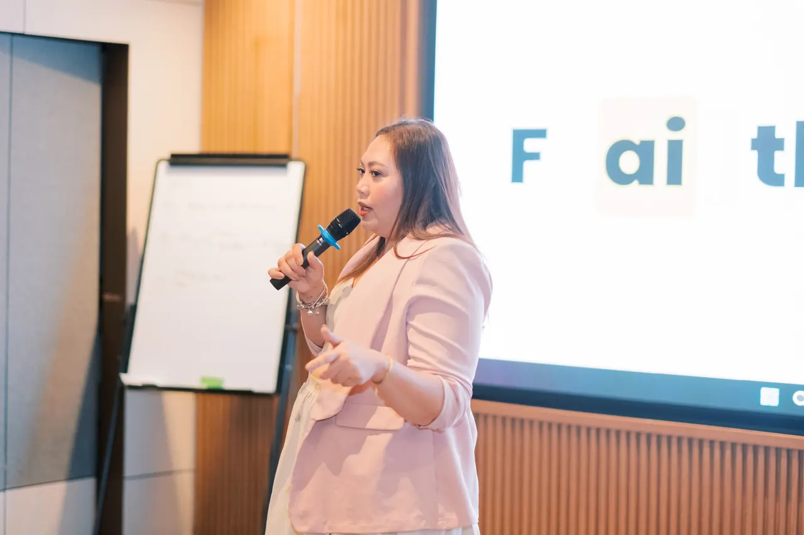

Learn with Faith
Hands-on workshops and training for your team, members or community. Participants practise on real tasks.
For event organizers, companies and brands looking for practical, human-first AI education. Faith Natividad speaks on working better with AI, without the hype.

Choose the format that fits your event. Each one is tailored to your audience.
Hands-on workshops and training for your team, members or community. Participants practise on real tasks.
Keynotes, talks and panels on practical AI, human judgment and the future of work.
Brand partnerships and education collaborations that serve learners first.
Every talk is adapted to the audience. These are the themes Faith speaks on most.
Where AI helps in everyday work, and where it does not.
Judgment, clarity and work habits before tools.
How leaders help teams use AI with purpose and accountability.
The opportunity for Filipino professionals and businesses.
Faith’s sessions suit audiences who want practical next steps rather than technical depth.
Faith Works partners with brands and organizations on education that is genuinely useful to learners: workshops, learning series and community events.
Partnerships follow our editorial rules. We explain outcomes before tools, avoid guaranteed results, and never present a partner’s claims as our own.

Share the basics and we will come back with a tailored proposal. Your event brief goes directly to the person who handles bookings.
Inviting Faith is a request, not a confirmed booking. Appearances are confirmed in writing.